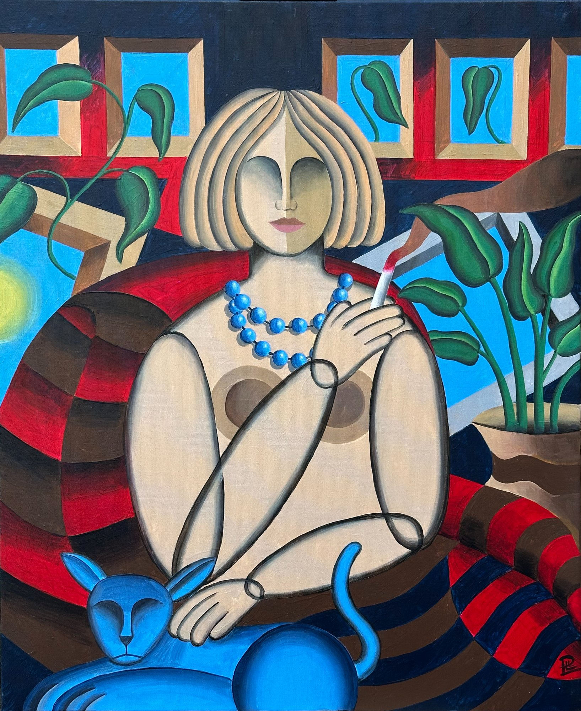
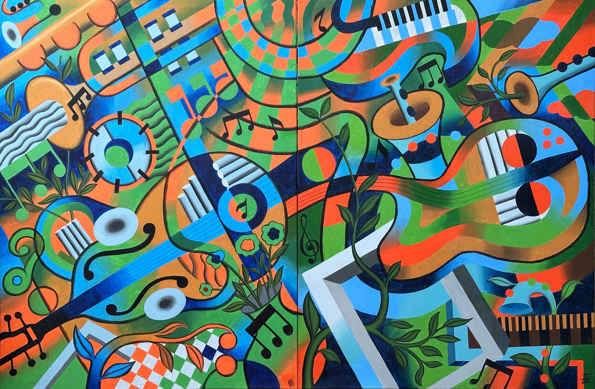

Técnica
2024-08-28
Técnicas Básicas de Pintura con Acrílicos
Descubre los fundamentos esenciales para dominar la pintura acrílica: capas, texturas y efectos especiales.
Leer más →
2024-08-28
Descubre los fundamentos esenciales para dominar la pintura acrílica: capas, texturas y efectos especiales.
Leer más →
2024-08-25
Conoce la trayectoria de un maestro del expresionismo que ha transformado el arte catalán contemporáneo.
Leer más →
2024-08-22
Cómo el mar, la luz y la cultura mediterránea alimentan la creatividad de artistas contemporáneos.
Leer más →
2024-08-19
Una mirada honesta a la vida artística en la capital catalana contemporánea.
Leer más →
2024-08-16
Desde sus orígenes en Alemania hasta su impacto global, descubre cómo el expresionismo cambió el arte para siempre.
Leer más →
2024-08-13
Cómo los artistas expresionistas utilizan el color como herramienta emocional primaria.
Leer más →
2024-08-10
Cómo los artistas transforman objetos simples en composiciones llenas de vida y significado.
Leer más →
2024-08-07
Cómo los artistas modernos transforman el cuerpo humano en instrumento de expresión emocional.
Leer más →
2024-08-04
Cómo Barcelona continúa generando y atrayendo a los grandes artistas del siglo XXI.
Leer más →
2024-08-01
Descubre las diferencias clave entre estos dos medios y cuál es el mejor para tu práctica artística.
Leer más →
2024-07-29
Aprende los principios fundamentales que hacen que una pintura funcione compositivamente.
Leer más →
2024-07-26
Cómo la música influye en la visión artística de pintores expresionistas y contemporáneos.
Leer más →
2024-07-23
Una guía práctica para artistas que buscan sostener su carrera profesionalmente.
Leer más →
2024-07-20
Cómo los artistas actuales reinventan el paisaje mediterráneo más allá del romanticismo.
Leer más →
2024-07-17
Cómo los artistas observan la naturaleza y la transforman en obra de arte.
Leer más →
2024-07-14
Un recorrido por los espacios más importantes para el arte contemporáneo en la ciudad.
Leer más →
2024-07-11
Estrategias y reflexiones para descubrir y cultivar tu voz artística única.
Leer más →
2024-07-08
Por qué la pintura figurativa continúa siendo vital en la era de la fotografía digital.
Leer más →
2024-07-05
Cómo el espacio físico de trabajo moldea y define la práctica artística.
Leer más →
2024-07-02
Cómo el arte y la cultura transforman a Barcelona en destino global y motor económico.
Leer más →
2024-06-29
Un análisis de los movimientos, estilos y preocupaciones que definen la pintura del presente.
Leer más →
2024-06-26
Domina técnicas sofisticadas para llevar tu pintura acrílica a nuevos niveles.
Leer más →
2024-06-23
Un recorrido por cinco siglos de tradición pictórica en Cataluña.
Leer más →